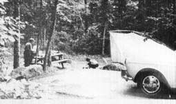
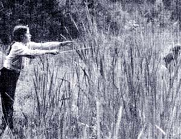
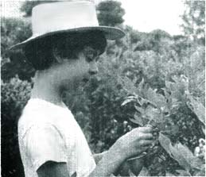
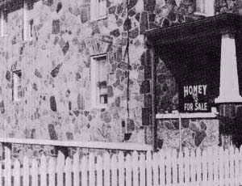
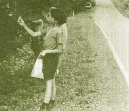

You're on your way from here to there-or perhaps living on the road for a stretch, so that "home" is here, wherever you are-or camping for fun or from need or for a chance to sort things out . . . or you're cruising an area in depth, looking for a homestead.
You have the nomad's life pretty well worked out . . . except, that is, for a lingering uncertainty about the food. It isn't just that you want to avoid the greasy spoon cafes along the route. (You can get hepatitis in other ways too, after all.) No, it's more than that. You'd like to be able to gypsy around without depending so much on canned, prepackaged or "plasticated" store groceries. You wish you could have more Real Food while on the road. How can you swing it?
Well, friends, this isn't exactly the final answer sheet on How To Enjoy Real Foods While Traveling . . . because we're still feeling our way along that path, too. But we are discovering a few tricks that work, and here's what we've come up with so far.
First, a peek into our supply box, which contains the things we assemble and pack before leaving . . . since they must be either specially prepared or bought at certain places:
[1] Herb teas, both dried at home and bought through the mail. They're light, take up minimum space (they'll squoosh into almost any corner) and the children can enjoy these drinks too.
[2] Honey, one jar to start with. We can buy this just about anywhere.
[3] Homemade bread, two frozen loaves. More than that would turn green before we had a chance to eat them.
[4] Cornmeal (stone-ground, yellow).
[5] Whole-wheat, stone-ground flour . . . for breading fish and for pancakes and other baking.
[6] Peanuts in the shell. With milk and fruit, these are a meal.
[7] Peanut butter (made the right way by whizzing up nothing but the nuts-and maybe a touch of sea salt-in a blender).
[8] Dried fruit, unsulfurized.
[9] Sunflower seeds.
[10] Soybeans, dried.
[11] Mung beans, dried.
[12] As many of our garden vegetables and as much of our own goat's milk as we can squeeze in, to give us a good running start. Such provisions are worth taking an extra cooler for, if there's room.
[ 13] Food yeast, a superb source of protein and B vitamins.
We use either of two kinds of yeast available from Plus Products, 1648 St. Clair Avenue, Cleveland, Ohio 44114. (This firm doesn't send you a catalog every month and a half, by the way, which kinda makes me respect their seriousness about the whole nutrition business.)
Plus Formula 250-Yeast Plus-offers B vitamins in the proper ratio for the body's requirements . . . for example, 131, B2 and B6 occur in equal amounts. All B-vitamin or multivitamin preparations should observe this proportion (though, unfortunately, most of them don't); otherwise, subtle nutritional deficiencies can occur because a high intake of one of the B group requires complementary amounts of the others for correct metabolism. For this reason, food yeast, wheat germ and other natural sources of these vital substances are to be preferred to one-shot doses of isolated elements of the B complex or to out-of-balance super capsules. Just like the ferns in the woods, the members of this nutritional family don't grow alone. [See Adelle Davis, Let's Eat Right To Keep Fit, for more information.-MOTHER.]
Formula 450 from Plus Products has a correct balance of B vitamins and is instantized as well. Moreover, this supplement is specially grown on molasses and is palatable . . . rather than just bearable, as regular food yeasts tend to be.
We put our yeast (we call it "fuel") in a small shaker jar and keep it available at every meal. The powder combines very well with Chinese foods, with all tomato dishes and with the goulash-type mixtures that are likely to be produced over a campfire. The children use it voluntarily and often with gusto . . . which is more than I can say for some of the other super supplements we've tried. We might forget the can opener and not worry, but if the food yeast is left behind, we'd have to turn back to get it. That's how much we depend on our "fuel".
Here are four kinds of Real Food that can be made while movin' on. Come to think of it, if you put them all together you'll have a meal. Then throw in a little fishing and/or foraging and you'll have a feast on your hands.
1 cup yellow, stone-ground cornmeal
1 Tbs. fat (lard, oil or butter)
7/8 cup boiling water
Dash of salt (if desired)
Mix the ingredients well, let them cool slightly and pat the dough into very thin rounds on a cooky sheet, a piece of foil or a frying pan. Bake the chips over the campfire, turning them once and removing them when they're crisp and brown.
Sure, you can make yogurt on the road. Just keep your starter going and-as suggested by Lizbeth in MOTHER NO. 9, pg. 96-use an insulated cooler to keep the temperature constant once the milk has been heated and cooled to the proper 110° to 115° F incubating point. As I'm sure you've already discovered, yogurt plus fruit equals a marvelously refreshing meal.
Oh, yes, you can!
1 package active dry yeast softened in 1/4 cup water
3/4 cup scalded milk (cooled to lukewarm)
1 /4 cup shortening (melted and cooled to lukewarm
1 Tbs. honey
egg (optional)
1 tsp. salt
3 cups whole-wheat flour
About 1/2 cup cornmeal
Add the lukewarm oil (test on your wrist!) to the lukewarm milk. Add the honey, egg and salt to this mixture, stir them and then add the softened yeast. Now stir in about half the flour. Then knead in the rest of the flour . . . or, if kneading is inconvenient, just punch the dough around in the bowl a bit. Lightness of texture is less important in these muffins than in bread, but manipulation does develop the gluten that is necessary for good rising.
Pat out the finished dough on a floured surface to a thickness of about 1/2 inch. Cut it into rounds with a cup or jar top, and let them rise for about one hour. Sprinkle cornmeal in a frying pan or on a griddle (add more as needed to keep the dough from sticking) and bake the muffins a few at a time-or as many as will fit-for seven minutes on each side. Before serving, toast them over the fire or in a pan.
I always double this recipe. Ain't no sense in just tantalizing people!
What kind? All kinds . . . mung beans, alfalfa, wheat, peas, sunflower seeds, oats, radishes. Use untreated seeds, of course. They're easily found in stores that offer whole foods, or you can raise your own.
As you know, seeds are packed with life power and many-poppy, caraway, sunflower, sesame, peanuts, beans, peas and soybeans-are good to eat in their own right.
When you sprout these little food packages, though, the growth curve of available C and B vitamins can really go out of sight. Seeds, cheap to begin with (mung beans are 67 cents a pound from Walnut Acres), become a really fabulous bargain in the process of germination; one pound of seeds produces six to eight pounds of tasty little tendrils. All you add is air, water and darkness.
To grow a quart of sprouts-just right to "Chinese" a small joint of chicken for a family of five-here's what to do: Put a handful of mung beans in a canning jar and top the container with wire screening or nylon net held on by the jar ring. Cover the seeds with 1-1/2 cups of water, and let them soak in a dark place overnight. Next morning drain off the liquid (save it for making breads or soups), and again set the jar away from the light. Darkness keeps the sprouts tender and promotes higher vitamin C content. Rinse them in cool water twice a day, and drain them well each time. Your crop will be ready in two or three days in warm weather and in four or five days during a cold period.
If you keep two jars going you'll always have fresh, live vegetables while on the road or in the woods, and your can opener will grow rusty and arthritic. Let it! Even if you're biking, you can find room for a pound of seeds . . . they won't let you down.
The output of your mobile mini-gardens can be used in many ways: fresh, in salads; cooked with scrambled eggs; mixed with any meats and other vegetables to make exotic dishes you can let the children name; steamed, briefly, in tomato sauce; dropped into pancake batter; or served in soup . . . slightly cooked or added at the last minute.
For more on sprouting, see Feel Like A Million! by Catharyn Elwood, published by Pocket Books and available for 95 cents.
If you're looking for a homestead or are otherwise distracted while camping, you won't plan on living completely off the land . . . but you can still forage delicacies that will make each meal memorable and unique.
The wild plums we found in the Smoky Mountains were a one-time event, and so we enjoy them even in retrospect as we remember the place where we picked them and the meal they spiced up. The cattails we pulled from a canoe in Wisconsin, the once and never again discovered hazelnuts, the mulberries that tasted so good off the tree and so flat in the house . . . all made family history. The more we forage, the more we feel that the finding and the picking are a part of the eating. And what a variety nature offers! There are mushrooms, greens, fish, wild fruits, elder flowers, wintergreen berries, always something to gather . . . even if it's only wild onion or garlic. You needn't worry about running out of onions when you can find these bulbs everywhere to give character to your soup or stew or whatever.
Foraging has been covered in great detail by more seasoned practitioners of the art than I am. James Churchill's well-illustrated series in MOTHER is worth collecting and binding, if only, it wouldn't break the old girl up to do so. Refer to Gibbons' and Angier's works (see MOTHER'S Bookshelf) and to Fernald's definitive Edible Wild Plants of North America. Substitute one of Uncle Euell's field guides for a few of those cans in your pack. Betcha you'll save in the long run, and you'll eat for real. When you know what to look for in the wild, you don't worry about whether the next town will have a supermarket.
You needn't limit yourself to California to find good pickin's in farm fields. Eastern, southern and midwestern farmers need seasonal help too, especially with such crops as strawberries, asparagus, peaches, cherries, tomatoes, apples and peas. Watch the signs, watch the fields, look for stacked crates, get the small-town papers and take a chance and ask. You may well find farms where you can:
[1] Pick your own produce for a lower-than-retail price.
[2] Pick up "drops" for a ridiculous sum. Try visiting an orchard after a storm . . . the owner is often glad to salvage some of what would otherwise be a total loss. (Oh, those peaches we happened on after a hard, windy rain in the central Pennsylvania mountains! We picked baskets full of mammoth melting windfalls at give-away prices.)
[3] Pick for pay, and-if the food's unsprayed-earn your own groceries.
Once, while away from home-or, more accurately, when "home" for the summer was a tent in an Elyria, Ohio campground-we found a blueberry farm where we could gather our own unsprayed fruit. What's more, the owners needed workers and were paying something like 10 cents per pint of berries picked. The deal began to look like free food and a lot of fun. Harvesting is a job I've always liked, and I hadn't had a crack at any blueberry bushes for ages.
But the day was hot-a dry July and steady sun-and our children were only five and seven. "Well, there it is," we decided. "We'll just make this a learning experience, that's all." The kids had seen buses full of migrant workers on the road and were beginning to ask questions . . . and so we told them: "You'll be hot. You'll be thirsty. Imagine you're a migrant worker. You'll know then, a little bit, how it is for them." Now of course we couldn't provide the whole bit-the crowded shacks, the pesticide sprays, the lack of dignity, the uncertainty about wages-but we thought of the experiment as being a kind of bridge. We took a jug of water and an impromptu bagged lunch and set off.
As matters turned out-despite all our long-faced sociology-the children loved the work. They picked and picked and picked. Their tongues got pretty blue, too. They were needed. They had something to show for their morning . . . real, heaped baskets of berries. And the dimes they were paid were not play money. Serves us right for being so educationally heavy-handed. Maybe it really is true that learning isn't limited to what the instructor programs it to be!
Yes, there still are regional differences, and let's hope there always will be. Not everything is standardized/devitalized/wrapped up, much as it may seem so if you only shop at the usual places.
Consider sourwood honey. I don't know whether it's produced anywhere outside the mountains of North Carolina and Tennessee, where the sourwood tree grows. Sourwood honey is so much itself, so unique, so spilling over with flavor . . . that once you've sampled it you crave it again and remember the taste years later. We bought some while camping in North Carolina-the whole comb in a quart jar-and found it so delicious that we made a spoonful of the honey our dessert after a meal of freshly caught mountain trout. I mean we had trout and honey for dinner. (And tea.) Sometimes it's good to eat only a few dishes and to savor them well. You can do that when they're Real Food.
Or take another local specialty, Wisconsin's lefse (thin, thin Norwegian potato pancakes). They're perfect for nomads because they keep, taste good cold and wrap up or mop up all kinds of foods from meats and sauces to cheeses and spreads. Try this delicacy if you're roamin' in the North where food markets and bakeries carry lefse (but read the labels . . . some brands contain preservatives).
Pennsylvania Dutch country-despite the violence done to the landscape and the Amish lifestyle in the tourist traps-also-a variety of blandishments, not the least of which is scrapple . . . a loaf made of cornmeal, broth, liver and pork craps. At a country or small-town butcher shop or a farmers' market you can buy scrapple that contains no preservatives. Crisp it up over the campfire and top it with some eggs. Call it breakfast, lunch or dinner and eat some violet leaves as you go along your way. When we were in Wisconsin, we missed scrappie. Now, living in Pennsylvania, we sometimes yearn for a handful of lefse!
Other local specialties are more widely distributed, but one of die easiest to find is the gristmill where cornmeal and some times wheat and buckwheat flour are ground with stones . . . often by water power. Here's where you can get the fixings for your corn chips and English muffins, cornmeal mush, buckwheat cakes and such.
In many places you can also buy wheat and oats (for sprouting) directly from farmers. Gives you an excuse to talk to the folks, too, and to see their places. We always learn something.
Once we stopped to ask a local man whether we might buy some of the persimmons we had noticed on the ground under his trees. After we had gathered a basketful and given him the price he asked, he showed us through his new farrowing house and let the children pet his young puppies. He had what we needed, and we were glad to pay him for it. How good-how much more human-this business of living becomes when it's possible to buy in this way!
Finally, the whole vegetable gardening/truck farming scene is in a time of transition. Organic growers are putting up signs and beginning to let the hungry seekers of whole foods know where they are. To my mind, the most helpful directory to tracking down these sources is the Guide To Organic Foods Shopping and Organic Living (Emmaus, Pennsylvania: Rodale Press, $1.00). We've followed up several leads from the Guide to buy organic beef, vegetables, honey and such and plan to lean on it even more heavily in our coming travels. The sellers are listed by state and some are worth going out of your way to find.
The thing about the mountains is . . . something wonderful could be around the next bend, and often is. The thing about the plains is . . . you can really see it all. The thing about the woods is . . , they're so secret, they have their own life.
Wherever you are, whether you're on your way or on the road or on the land, you can eat well without doing violence to the land, or to your body, or to your economy. A little food yeast, a little foraging, a little looking around and you'll be living on real stuff while campin' or movin' on.
Let us know what you discover. Happy wandering!
|
 |
 |
 |
|
 |
 |
|